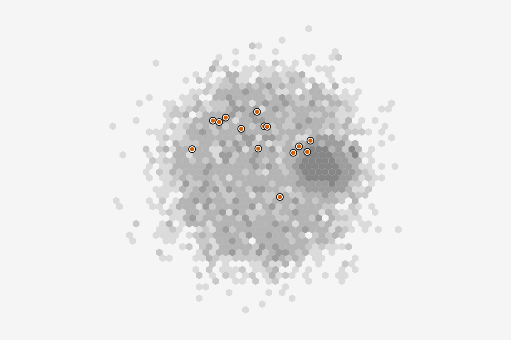
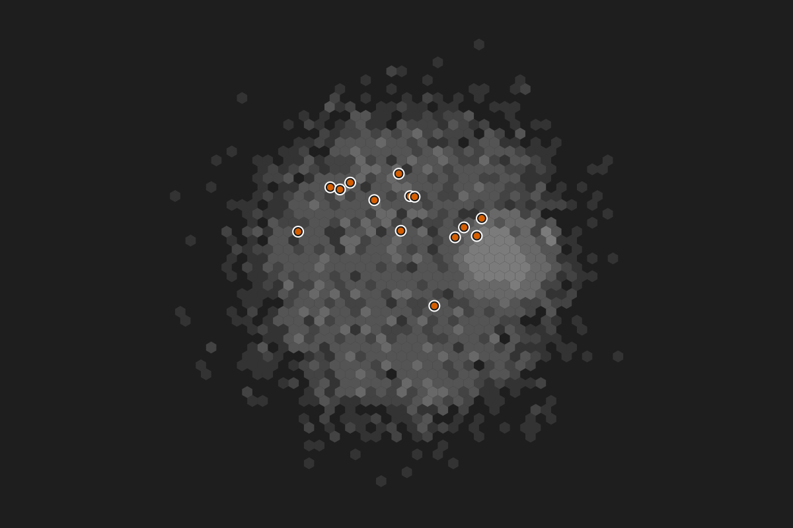

Flagged flagged
yes14
no2,986
Screen mocks for one sitting of a fraud analyst: she swaps March's transfers for April's, reads what replayed, re-runs the one result that did not, and applies her team's recipe and then a recipe that holds only styles. Use these styles replaces only her layers that paint the same property on the whole graph; a layer scoped to a set stays. Comparing the two months is its own flow, Compare with the previous data version. Each state is the whole app at 1440 by 900. The flow that strings them together is Update with new data, apply a recipe, compare.
Show annotationsHide annotations -- numbered boxes over each state, with the framework section behind each element and the compact-mantine component it would be built with. Counts come from the kit's March and April transfer data. In this telling the April export renamed riskScore and wrote flagged as Y and N, so the binding step opens; the kit's own April file matches every column. The canvas keeps March's drawing in the April states.
The file picker returned transfers-2026-04.csv. The load step previews it against the March version before anything changes.
| from_account | to_account | amount | timestamp | kind | risk_score | flagged |
|---|---|---|---|---|---|---|
| ACC-633005 | ACC-393859 | 1,240.00 | 2026-04-01 08:12 | business | 3 | N |
| ACC-946224 | ACC-242954 | 9,500.00 | 2026-04-01 09:40 | personal | 93 | Y |
| ACC-242954 | ACC-888258 | 9,350.00 | 2026-04-01 11:02 | personal | 92 | Y |
| ACC-325714 | ACC-697114 | 86.20 | 2026-04-01 11:15 | business | 19 | N |
It opens only because one attribute is missing and one now reads as categories. One choice per such attribute, and none otherwise. The back arrow returns to the load step with every choice kept; Esc, Cancel and the close button apply nothing.
Apply committed one undo step. The canvas shows April at once, arranged positions kept; results replay in the background.
Show report on the notice opens Version history on the April entry. Last week's analysis on this week's data: these replayed, this one did not.
The analyst pressed Re-run. The pinned strip is gone, the rail badge clears, and the run reports like any long run.
From Main menu > Recipes > Apply a recipe.... Choosing a recipe shows its contents and needs before anything changes. The same dialog opens when the recipe file comes in through File > Open..., Data > Sources > Add a source, or a drop.
One choice per unmatched attribute; the Watchlist's ids are counted and the two that did not match are named.
One undo step added 3 sets and 3 layers, each marked new with its recipe's name. The unbound layer is kept, off and flagged.
The team's colors arrive as a recipe that holds only styles. A drop, File > Open... and Data > Sources > Add a source all recognize the file as a recipe and open this one Apply dialog, with nothing preselected. The first choice names each of her layers it will replace, with how many nodes each paints, and the layers it keeps. Nothing commits until one is chosen.
She chose Use these styles. One of the recipe's four layers reads an attribute this graph lacks, so one choice is asked; the other three matched by name.
Apply acted at once. The team's colors are on this graph: 4 layers are new and marked, the 3 named in the dialog are gone, and the Mule ring and Watchlist ring, scoped to their sets, are still painted. The notice says what happened; Undo on it, or the ordinary Ctrl+Z, brings the 3 back. Chargeback heat was left unbound and is switched off, never skipped silently.